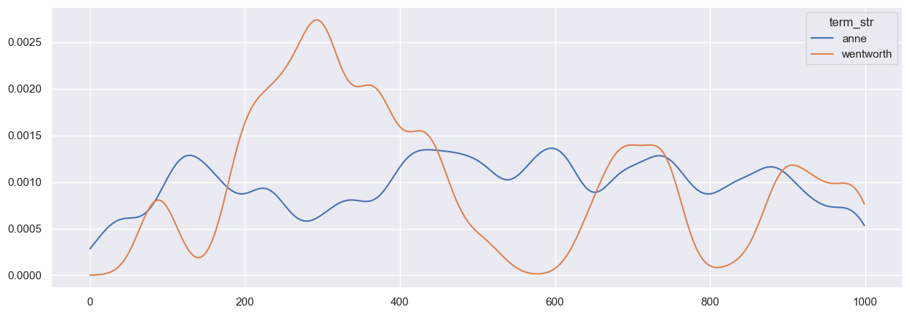
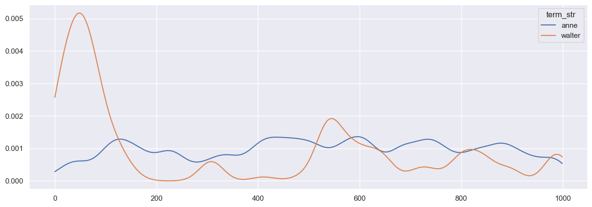
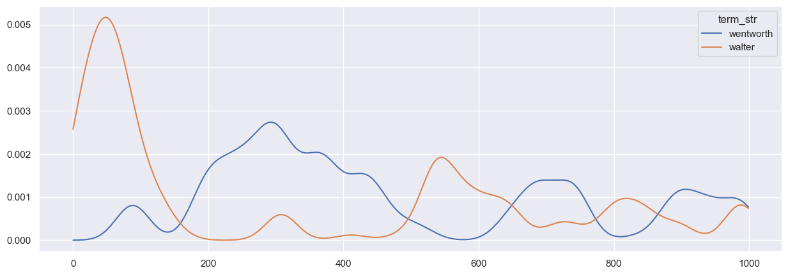
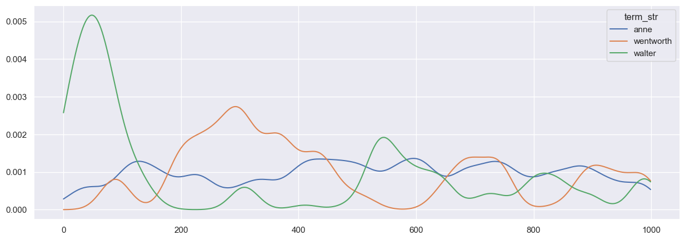
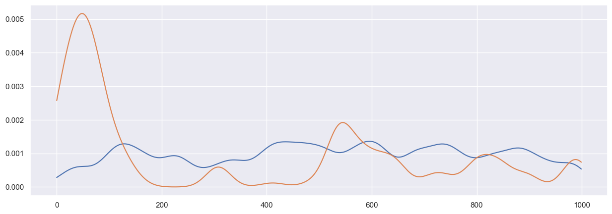
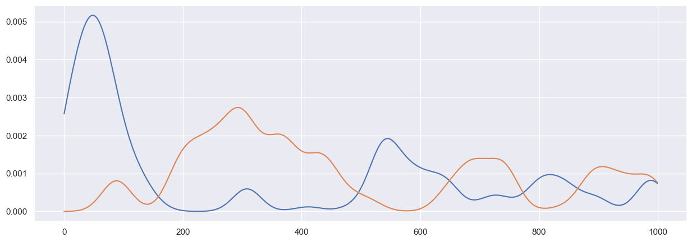

# data_dir = '/home/rca2t/Public/ETA/data/'
data_dir = '../data'
OHCO = ['book_id', 'chap_num', 'para_num', 'token_num', 'sent_num']Synopsis
Configuration
vocab_weight = 'term_count'
vocab_weight_quantile = .94
vocab_min_n = 3
kde_kernel = 'gaussian'
kde_bandwidth = 2000
kde_samples = 1000Libraries
import pandas as pd
import numpy as np
import scipy as sp
import matplotlib.pyplot as plt
import seaborn as sns; sns.set()
from sklearn.neighbors import KernelDensity as KDE
from nltk.corpus import stopwordsPragmas
from IPython.display import display, HTML%matplotlib inline
%pwd'/Users/rca2t1/Dropbox/Courses/DS/DS5001/DS5001_2023_01_R/repo/lessons/M90_DispersionPlots'Functions
def get_term_id(vocab, term_str):
return vocab[vocab.term_str == term_str].index[0]
def get_term_str(vocab, term_id):
return vocab.loc[term_id].term_strProcess
Import tables from database
V = pd.read_csv(data_dir+'/output/austen-combo-VOCAB.csv').set_index('term_str')
K0 = pd.read_csv(data_dir+'/output/austen-combo-TOKENS.csv').set_index(OHCO)K = K0.loc[2]
K = K.reset_index(drop=True)
K.index.name = 'offset'K.head()| token_str | term_str | |
|---|---|---|
| offset | ||
| 0 | Sir | sir |
| 1 | Walter | walter |
| 2 | Elliot | elliot |
| 3 | of | of |
| 4 | Kellynch | kellynch |
Reduce vocabulary
stops = set(stopwords.words('english'))len(stops)179V1 = V[(~V.index.isin(stops)) & (V.n < 1000) & (V.n > 100)]V1.shape(163, 5)V1.sort_values('n', ascending=False).head(10)| n | n_chars | p | i | h | |
|---|---|---|---|---|---|
| term_str | |||||
| would | 870 | 5 | 0.004248 | 7.879013 | 0.033470 |
| mrs | 821 | 3 | 0.004009 | 7.962646 | 0.031920 |
| elinor | 685 | 6 | 0.003345 | 8.223924 | 0.027506 |
| said | 570 | 4 | 0.002783 | 8.489066 | 0.023626 |
| one | 569 | 3 | 0.002778 | 8.491600 | 0.023592 |
| marianne | 566 | 8 | 0.002764 | 8.499226 | 0.023489 |
| must | 511 | 4 | 0.002495 | 8.646705 | 0.021574 |
| anne | 503 | 4 | 0.002456 | 8.669470 | 0.021292 |
| much | 495 | 4 | 0.002417 | 8.692600 | 0.021010 |
| every | 478 | 5 | 0.002334 | 8.743018 | 0.020406 |
K = K[K.term_str.isin(V1.index)]K.head()| token_str | term_str | |
|---|---|---|
| offset | ||
| 0 | Sir | sir |
| 1 | Walter | walter |
| 2 | Elliot | elliot |
| 10 | man | man |
| 16 | never | never |
Create arrays of offsets for each term
B = K.reset_index().groupby(['term_str']).offset.apply(lambda x: x.tolist()).to_frame()B['x'] = B.apply(lambda x: np.array(x.offset)[:, np.newaxis], 1)B.head()| offset | x | |
|---|---|---|
| term_str | ||
| acquaintance | [692, 1219, 1633, 1891, 2911, 8246, 9276, 1252... | [[692], [1219], [1633], [1891], [2911], [8246]... |
| almost | [75, 5178, 6696, 7864, 9055, 9327, 10035, 1107... | [[75], [5178], [6696], [7864], [9055], [9327],... |
| always | [111, 860, 930, 1472, 1606, 3214, 4520, 5296, ... | [[111], [860], [930], [1472], [1606], [3214], ... |
| anne | [155, 893, 937, 965, 979, 1222, 2424, 2928, 30... | [[155], [893], [937], [965], [979], [1222], [2... |
| another | [2152, 3680, 4286, 5283, 6957, 12676, 12756, 1... | [[2152], [3680], [4286], [5283], [6957], [1267... |
Get KDE for each term
scale_max = K.index.max() # THIS IS CRUCIAL
x_axis = np.linspace(0, scale_max, kde_samples)[:, np.newaxis]
B['kde'] = B.apply(lambda row: KDE(kernel=kde_kernel, bandwidth=kde_bandwidth).fit(row.x), 1)
B['scores'] = B.apply(lambda row: row.kde.score_samples(x_axis), axis=1)
# B['scaled'] = B.apply(lambda row: np.exp(row.scores) * (scale_max / kde_samples), axis=1)Visualize KDE plots
PLOTS = B.apply(lambda row: pd.Series(np.exp(row.scores) * (scale_max / kde_samples)), axis=1)FIG = dict(figsize=(15, 5))PLOTS.T[['anne','wentworth']].plot(**FIG);
PLOTS.T[['anne','walter']].plot(**FIG);
PLOTS.T[['wentworth','walter']].plot(**FIG);
PLOTS.T[['anne','wentworth','walter']].plot(**FIG);
PLOTS.loc['anne'].plot(**FIG)
PLOTS.loc['walter'].plot(**FIG)<AxesSubplot: >
PLOTS.loc['walter'].plot(**FIG)
PLOTS.loc['wentworth'].plot(**FIG)<AxesSubplot: >
# PLOTS.loc['walter'].plot(**FIG)
# PLOTS.loc['elizabeth'].plot(**FIG)Score Pairs
We generate only unique combinations of pairs not permutation, i.e. we treat a,b == b,a.
pairs = pd.DataFrame([(x,y) for x in B.index for y in B.index if y > x] , columns=['x','y'])pairs.head(10).TCompute overlap
This takes a while to run.
def overlap(row):
kde1 = PLOTS.loc[row.x]
kde2 = PLOTS.loc[row.y]
overlap = np.minimum(kde1, kde2)
return np.trapz(overlap)pairs['overlap'] = pairs.apply(overlap, axis=1)def paircorr(row):
return PLOTS.T[[row.x,row.y]].corr().values[0][1]pairs['corr'] = pairs.apply(paircorr, axis=1)Skim Top Pairs
pairs.overlap.plot.hist()pairs[pairs.overlap > .6 ].sort_values('overlap', ascending=False)pairs2 = pairs.copy().rename(columns={'x':'y', 'y':'x'})
pairs3 = pd.concat([pairs, pairs2], sort=True)Explore term correlations
CORR = pd.crosstab(pairs3.x, pairs3.y, pairs3.overlap, aggfunc='sum').fillna(1)CORR.head()def corr_plot_terms(terms, dtm, title='Foo'):
plt.figure(figsize = (20,20))
print(title)
corr = dtm[terms].corr()
sns.heatmap(corr, vmax=.3, annot=True, center=0,
cmap='RdYlGn',
square=True, linewidths=.5,
cbar_kws={"shrink": .5})
plt.show()corr_plot_terms(TOP_TERMS, PLOTS.T, title='TEST')Export Graphs
import networkx as nx
G = nx.Graph()
edges = pairs[['x','y','overlap']].sort_values('overlap', ascending=False).head(1000).apply(lambda x: (x.x, x.y, x.overlap), axis=1).values
G.add_weighted_edges_from(edges)
nx.write_gexf(G, "{}.gexf".format('austen'))Save
pairs.to_csv(data_dir + '/austen-persuasion-term_pairs.csv')
PLOTS.T.to_csv(data_dir + '/austen-persuasion-term_kde.csv')